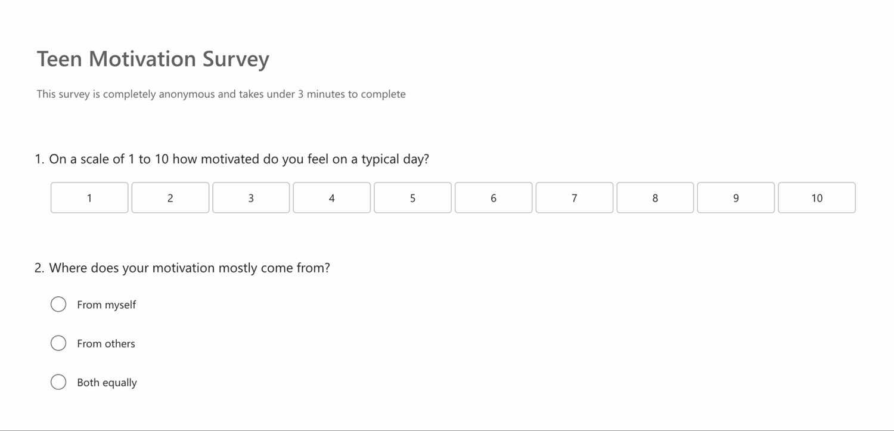
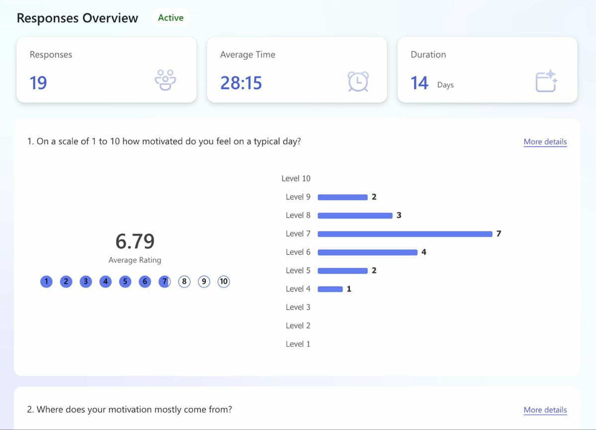
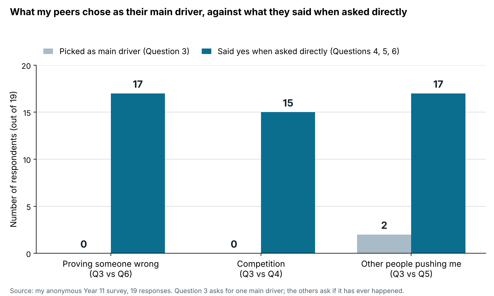

What my peers said
A survey of 19 students in my year, what surprised me in it, and why I changed it halfway through.
How I ran it
I made an anonymous survey and sent it to close friends in Year 11, because they were the people most likely to be honest. I made it anonymous on purpose. Someone driven by fear or pressure probably will not admit it to a person's face, and I had been asked in a peer conversation whether people would be truthful. It ran for 14 days and got 19 responses.
That is enough to see patterns in my year level. It is not enough to speak for teenagers in general, so I only make claims about the students I surveyed.


The result that surprised me most
Question 9 asked whether the same method of motivation that pushes one person forward could destroy another. The average was 4.58 out of 5, and 13 of the 19 gave it a 5. That is the strongest agreement in the whole survey, and it is the exact idea my project is about. I did not expect it to be that clear-cut. People my age already seem to sense this from their own experience.
Pressure: does it work, and can it destroy someone?
Average rating out of 5, 19 respondents. Higher means stronger agreement.
View as table
| Question | Mean | Median |
|---|---|---|
| Q8: pressure and discomfort can be effective motivators | 3.42 | 4 |
| Q9: the same method can push one person and destroy another | 4.58 | 5 |
13 of 19 gave Question 9 a 5. Nobody gave Question 8 a 5: 10 gave it a 4, 7 gave it a 3 and 2 gave it a 2.
Question 8 makes it more interesting. It asked whether pressure and discomfort can be effective motivators and it averaged only 3.42. Nobody rated it 5, and most answers sat at 3 or 4. My peers are not divided about whether pressure works. They are lukewarm about it, and far more confident that it can damage someone than that it helps.
That flipped my starting assumption. I had been treating pressure as effective but risky. My peers see it as unreliable and risky.
I report the median as well as the mean, after my psychology teacher pointed out that means are pulled by extreme answers. Question 8 has a median of 4 and Question 9 a median of 5, so the harm question scores higher than the effectiveness question on both measures.
The gap between what people say and what they admit
The most useful thing in the survey was something I was not looking for. In Question 3 I asked what makes people push through something hard. Ten chose having a clear goal, four chose enjoying it, and not one of the 19 chose proving someone wrong. But in Question 6, only two said no, so 17 said that wanting to prove a doubter wrong had motivated them at some point. Question 4 shows the same thing with competition: 15 of 19 said wanting to beat someone at their own level drives them at least sometimes, but nobody picked competition in Question 3.
What people chose as their main driver, against what they admitted when asked directly
Number of respondents out of 19.
View as table
| Idea | As main driver (Q3) | Asked directly |
|---|---|---|
| Proving someone wrong | 0 of 19 | 17 of 19 (Q6: 5 strongly, 12 a little) |
| Competition | 0 of 19 | 15 of 19 (Q4: at least sometimes) |
Question 3 asked for one main driver out of five options. The other questions asked whether it had ever happened, so the two are not exactly the same question.

The questions are not identical. Question 3 asks for one main driver, and the others ask whether it has ever happened. So proving people wrong is probably an occasional motivator for most of my peers, not a hidden main one. The pattern still holds: when people rank their own motivation, these things do not appear. When asked directly, most say yes.
Question 2 adds to this. Only 2 of the 19 said their motivation mostly comes from others, and 17 said it comes from themselves or from both equally. Yet in Question 5, 17 said pressure from a parent, teacher or coach had pushed them harder than they would push themselves. Most of my peers see their motivation as their own, but most have also felt pushed by other people.
Where does your motivation mostly come from? (Q2)
Number of respondents out of 19.
View as table
| Answer | Respondents |
|---|---|
| From myself | 9 |
| Both equally | 8 |
| From others | 2 |
Pressure from other people (Q5 and Q7)
Number of respondents out of 19.
Q5: has pressure from a parent, teacher or coach ever pushed you harder than you would have pushed yourself?
Q7: have you ever felt so much pressure to perform that you wanted to quit entirely?
View as table
| Question | Yes | Sometimes | No |
|---|---|---|---|
| Q5: pressure pushed me harder than I would push myself | 8 (definitely) | 9 | 2 (not really) |
| Q7: wanted to quit entirely because of pressure | 8 | 8 | 3 |
So 17 of 19 said yes or sometimes to Question 5, and 16 of 19 said yes or sometimes to Question 7.
The anonymous written answers explain why the gap exists. In Question 11, which asked what motivates people that they would not normally admit, several people wrote about fear of failing, competition, and not wanting to disappoint people. One said it sounds like doing things for other people, which is exactly why they would not usually admit it.
So when people describe their motivation openly they talk about goals and enjoyment. When they are asked about specific experiences, fear of failure and competition turn up. That gap between how people see themselves and what drives them is a real finding, and it is not something I could have got from a book. The research section gives the explanation I found for it.
What gets people out of bed, and what they would not admit
Two of my open questions show the gap from the other side. Question 10 asked what genuinely gets people out of bed and keeps them going. Question 11 asked what motivates them that they would not normally admit. I grouped each written answer under its main theme and counted it once. Someone else might group a few of them differently, so treat the counts as close, not exact.
What genuinely gets you out of bed? (Q10)
18 people answered. I grouped each answer under its main theme.
View as table
| Main theme | Answers |
|---|---|
| A goal or something meaningful to work towards | 6 |
| Friends and family | 5 |
| Getting better after a bad result | 3 |
| Enjoying what I am doing | 2 |
| Deadlines | 2 |
| Fear, competition or proving someone wrong | 0 |
The answers to Question 10 were about goals, friends and family, and enjoying things. Not one of the 18 mentioned fear, competition or proving someone wrong. One person wrote: "My friends and family honestly Having people around me who care about what I'm doing makes me want to keep going even when I can't be bothered" Two people said deadlines, which fits what I found out about my own planning: tasks with a date got finished.
What motivates you that you would not normally admit? (Q11)
18 people answered. I grouped each answer under its main theme.
View as table
| Main theme | Answers |
|---|---|
| Getting better, for myself | 5 |
| Proving myself or proving someone wrong | 4 |
| Fear of failing | 2 |
| Not wanting to disappoint people | 2 |
| Competition | 2 |
| Friends | 2 |
| A coach who pushed too hard | 1 |
The four darker bars (proving myself or someone wrong, fear of failing, not disappointing people and competition) add up to 10 of the 18 answers.
Question 11 was different. Ten of the 18 answers named fear of failing, competition, proving someone wrong or not wanting to disappoint people. Those are the things nobody mentioned in Question 10. One person wrote: "Probably the fact that I don't want to disappoint people I wouldn't normally say that because it sounds like I'm doing things for other people but it definitely affects me"
This is the same gap as before, found in a third place. When people are asked what keeps them going they talk about goals and friends. When they are told it is anonymous and asked what they would not normally admit, pressure shows up. The competition question (Question 4) points the same way, with 15 of 19 saying it drives them at least sometimes.
Wanting to be better than someone at your level (Q4)
Number of respondents out of 19.
View as table
| Answer | Respondents |
|---|---|
| Yes, this drives me a lot | 5 |
| Sometimes | 10 |
| Rarely | 3 |
| Never | 1 |
So 15 of 19 said it drives them at least sometimes.
Why I added Questions 12 and 13
After the first few responses I realised the multiple choice questions were giving me numbers but no explanations. I could see that people had experienced pressure, but not what happened afterwards, and my whole project is about what happens when motivation runs out. So I added two questions partway through. That is why they have 16 responses instead of 19, and I say so whenever I use them.
Question 12 asked whether something that motivated them ever stopped working or made things worse. 15 of the 16 people who answered described something that motivated them turning into pressure or stress, which is the pattern I went through in swimming. The same four stories came up again and again:
- Good results motivated them until the pressure to keep achieving became exhausting.
- Being pushed by someone helped at first, but eventually they were only doing it because they were scared of letting that person down.
- Something they enjoyed stopped being enjoyable once they started worrying about being good at it.
- Competition drove them until they were comparing themselves to everyone and could no longer be happy with their own progress.
In their own words:
"There was a time when being pushed by someone helped me a lot but eventually it just felt like I was doing everything because I was scared of letting them down I ended up getting really tired of it"
Anonymous Year 11 response, Question 12
In Question 11 one person described a coach who pushed them so hard they quit their sport. That one sentence describes the whole idea behind this site, and it matches a 21-month study of competitive swimmers (see self-determination theory).
Question 13 asked whether motivation stays the same or changes with the situation. All 16 people said it changes. One answer stuck with me: motivation does not appear just because something is important, you have to personally care about it. Another said they used to think you either had motivation or you did not, but now they think sometimes you have to start doing something before the motivation shows up. I had been treating motivation as something you need before you act. That answer suggests it can work the other way around.
"I'm very motivated when I have a goal that matters to me but motivation doesn't really appear just because something is considered as important I have to actually personally care about it"
Anonymous Year 11 response, Question 13
"Before that I thought you either had motivation or you didnt but now I think sometimes you have to start doing something before the motivation comes"
Anonymous Year 11 response, Question 13
What this changed about the site
I had planned to explain what motivation is and how to build it. The survey says that is not the useful question. Most of my peers are already reasonably motivated, and 16 of 19 had felt enough pressure to want to quit something. So the site is about why motivation collapses, why the methods people rely on can turn on them, and the gap between what people think drives them and what does.
Limits of this survey
- All 19 respondents are Year 11 boys at one school who know me. I can describe patterns in my year level, not teenagers in general. Knowing me may also have affected how honest people were, even with anonymity.
- Question 5 was closed choice, so it tells me how often students felt pressure but not what they meant by it. I never defined pressure for my respondents, so that number may combine several different experiences. Two teachers raised this independently. If I ran the survey again I would ask what pressure meant to each student straight after asking if they had felt it.
- I used one question per idea, so I cannot check whether answers are consistent. I also changed scales (1 to 10 for Question 1, 1 to 5 for Questions 8 and 9). I compared my survey against professional ones in the measurement section.
- Questions 12 and 13 only have 16 responses.
- It is all self-report, and my own results show people are not fully accurate about their own motivation.